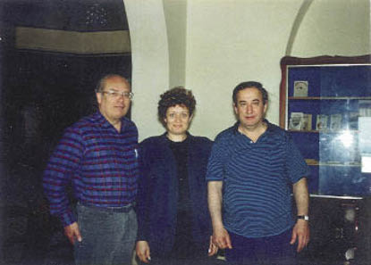

Denktaş 90’lı yılların ortasında bir kalp rahatsızlığı geçirmişti. Ankara’ya gelmiş, bir süre de hastanede yatmıştı. Ankara ayağa kalktı, Türkiye ayağa kalktı. Biraz da, dünyada Kıbrıs’la ilgili çevreler farklı bir biçimde ayağa kalktılar. Acaba Denktaş, aktif politikadan kopar mıydı? Bunu merak eden, bununla çok ilgilenen dış çevreler bilgi alma yarışına girdiler.
Bu yarıştan ben de nasibimi aldım. Oysa pek fazla bir şey bilmiyordum. Vesile yaratarak yemek daveti yapan birçok yabancı, sözü dönüp dolaştırıp Denktaş’ın sağlığına getiriyordu. Acaba Denktaş politikadan çekiliyor muydu? Ben de kendilerine, “Kıbrıslı Türkler en az yüz yaşına kadar yaşarlar, ömürlerinin olsa olsa son iki üç yılında istirahat ederler,” diyor ve Prof. Derviş Manizade’yi örnek gösteriyordum. “Derviş Bey doksanını geçti, hâlâ kitap yayınlıyor, makale yazıyor, konferanslar veriyor,” diyor ve morallerini bozuyordum.
Denktaş kısa bir süre sonra sağlığına kavuştu ve adaya döndü. Perhiz yaptı, eskisinden daha da sağlıklı hale geldi.

Dr. Christian Heinze Kıbrıs Cumhuriyeti Eski Anayasa Mahkemesi Başkanının Danışmanı,
Nuriye Manisalı, Erol Manisalı
Önlerinde Denktaş’ı engel olarak gören kimi çevreler bir konuda yanılıyorlardı ve bir şeyin farkında değillerdi.
Denktaş politik hayattan çekilmiş olsa da Anadolu ve Kıbrıs Türkleri bakımından Kıbrıs davası yine devam ettirilecekti. Üstelik bu gün uzlaşmaz dedikleri Denktaş, aslında işin başından beri en uzlaşmacı liderlerden birisiydi. Kıbrıs uyuşmazlığındaki uzlaşmazlık noktalarını iyi göremedikleri için yanlış değerlendirme yapıyorlardı.
Bu da Denktaş’ın suçu değildi. Uzlaşma, karşılıklı menfaatlerin dengelendiği noktada erişilecek bir husustur. Sadece bir tarafın politik ve ekonomik menfaatini sağlayabilen bir çözüm uzlaşma değil, dayatma sonucunu ortaya çıkaran bir durumdur.
Denktaş’ın kabul etmediği, yabancıların da anlamak ve görmek istemedikleri gerçek buydu.